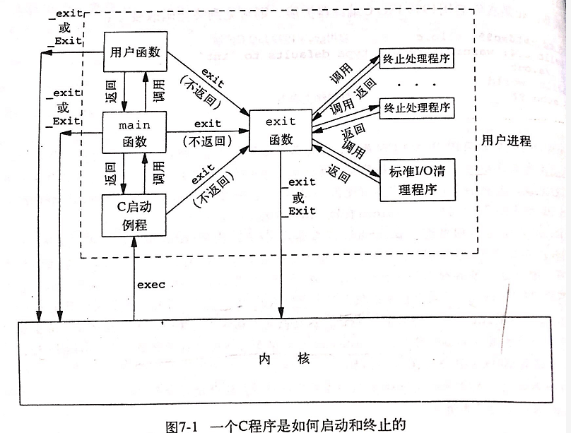
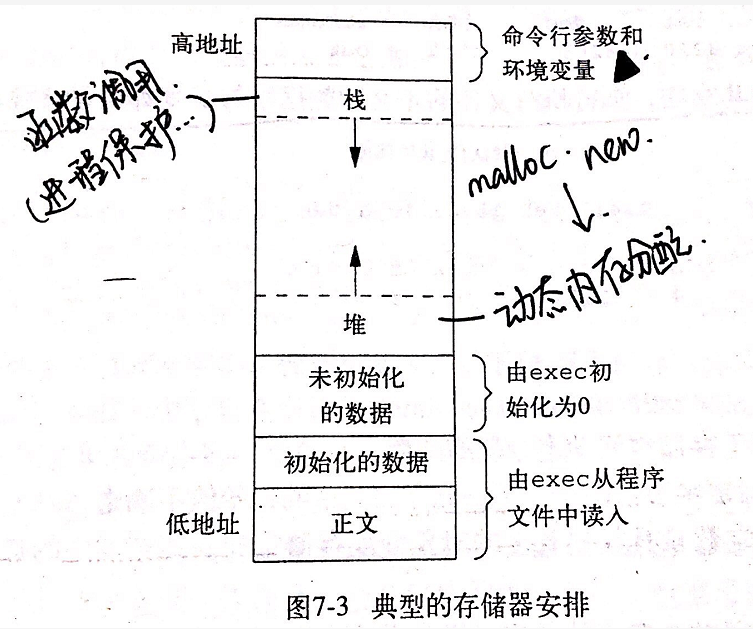

1. 进程环境
2. 进程执行与退出
2.1. main函数
C程序总由main函数执行开始
int main(int argc, char **argv);
内核执行程序（唯一方法：使用exec）时，调用main之前先用一个特殊的启动例程，可执行文件将此启动例程指定为程序的起始地址。启动例程从内核获得命令行参数和环境变量值，为按上述方法调用的main函数做准备。
2.2. Exit函数
exit函数终止进程，总是执行一个标准I/O库的清理关闭操作（缓冲区数据会被冲刷到文件中），再进入内核。带int参数，表示返回状态。
exit会调用函数（exit handler，终止处理程序），调用顺序与登记顺序相反。登记使用atexit(void (*func)(void))函数。先执行各个终止处理程序，再关闭打开的所有流。

2.3. 命令行参数
int argc表示参数数目，char **argv以字符串形式各参数
要求 argv[argc] == NULL
3. 存储空间布局
- 正文段，由CPU执行的机器指令。通常是可共享的，在存储器只有一个副本，只读。
初始化数据段，包含了程序中需要明确地赋予初值的变量。
非初始化数据段，又称BSS段(block started by symbol)，在程序执行之前将此段数据初始化为0或空指针。
栈，自动变量以及每次函数调用所保存的信息都存放在此段中。每次调用函数时，调用者的环境信息（如寄存器）和返回地址都存放在栈中。然后，在栈上为最近被调用的函数的分配自动和变量的存储空间。每次调用，使用一个新的栈帧。
堆，在堆中进行动态内存分配。（由于历史原因处于BSS段和栈之间）

可参考：
4. 共享库
执行文件中不需要包含库例程，只需要在可引用存储器中维护一个副本。
在第一次执行或第一次调用某个库函数时，使用动态链接方法将程序与共享库函数相连接。
减少可执行文件长度，但增加时间开销，另外好处是在更新库函数时无需重新链接程序。
5. 存储器分配
三个函数malloc ，calloc ，realloc
void *malloc(size_t size);
void *calloc(size_t nobj, size_t size);
void *realloc(void *ptr, size_t newsize);
void free(void *ptr);
返回指针是适当对齐的，可以用于任何数据对象。
通常用sbrk系统调用实现，该调用扩充或缩小进程的堆。但大多数malloc和free都不减少进程的存储空间，释放的空间供以后再分配，通常保持在malloc池中而非返回给内核。
一般分配空间比要求稍大，用于记录管理信息——分配块的长度、指向下一个分配块的指针等。
6. 两种函数
6.1. 转跳函数
int setjmp(jmp_buf env);
void longjmp(jmp_buf env, int val);
可以跨函数转跳（goto 只能函数内转跳），在栈上跳过若干调用帧，返回调用路径上某个函数。
6.2. 资源限制
int getlimit(int resource, struct rlimit *rlptr);
int setrlimit(int resource, const struct rlimit *rlptr);
查询、更改资源限制